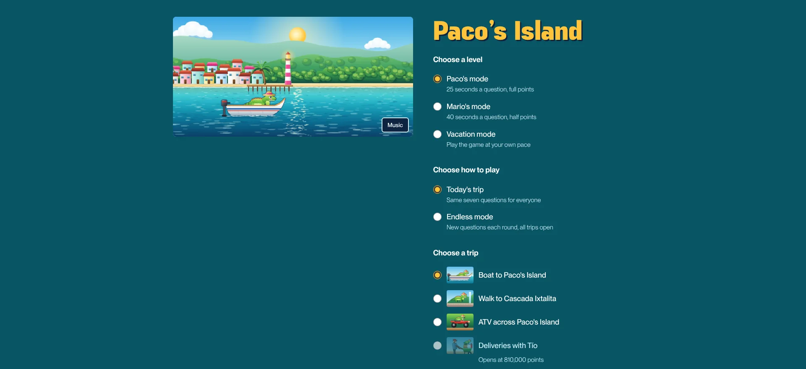
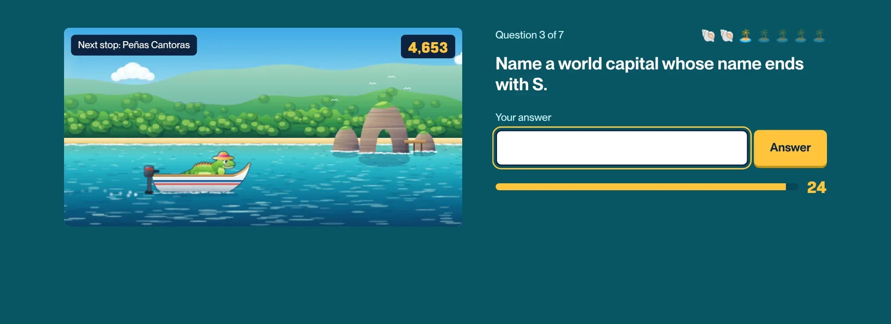
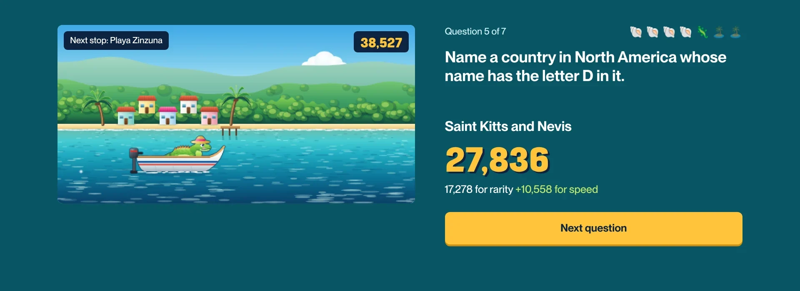
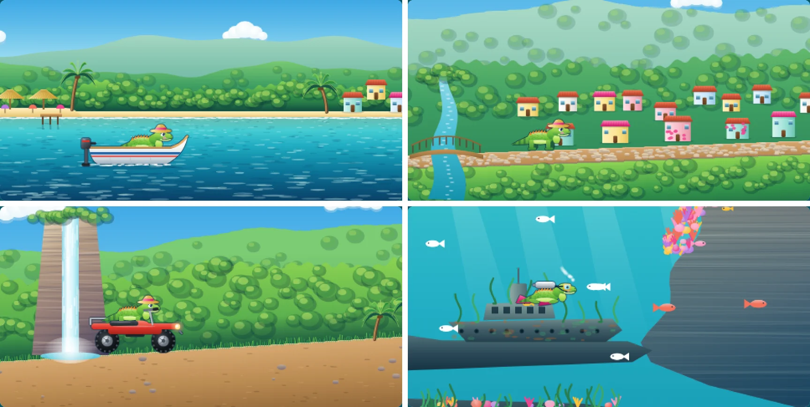
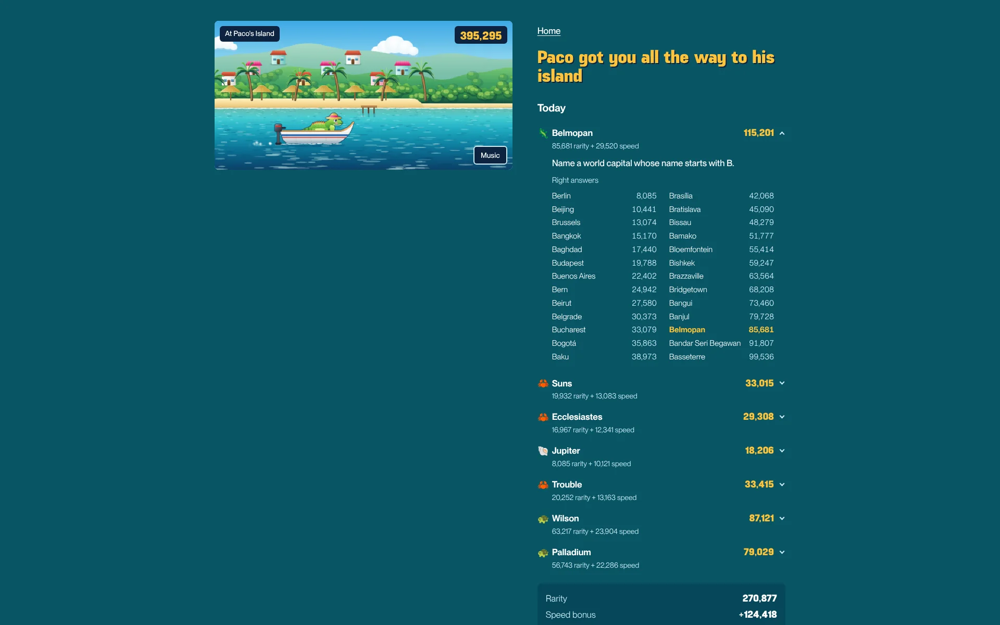
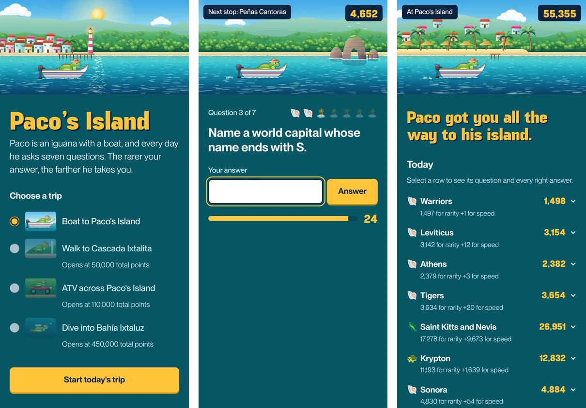

Paco’s Island
A daily trivia game. Paco is an iguana with a boat, and every day he asks seven questions. Each one has a fixed list of right answers. The rarer your answer, the farther he takes you across a bay I made up.
- Problem
- A game that scores an answer by how few people gave it needs a crowd before its scores mean anything.
- System
- Seven questions a day, the same for everyone. Every right answer carries a rarity score that’s set ahead of time.
- Mechanics
- Rarity comes from how often a name appears in English text, steadied by a hand-set tier. A curve turns it into points, a speed bonus grows with rarity, and the day’s total moves Paco along one of four trips.
- Stack
- HTML, CSS, and JavaScript with no build step; PixiJS; a service worker; a Node check on the question pool; Cloudflare Workers.
- Result
- 640 questions, with daily sets built a year ahead. It scores the same for one player or a million, runs without a server, and installs to a computer or phone.

A question has many right answers
Every question is a list cut by a rule. “Name a country in North America whose name has the letter D in it” has twelve right answers. The United States earns 1,497 points. Saint Kitts and Nevis earns 17,278. You get 25 seconds, and a wrong guess costs only the time it took.
The lists are the 193 UN member states, world capitals, the 50 states and their capitals, Mexico’s 32 federal entities, the 118 elements, four sports leagues, the presidents, the constellations, the Greek letters, the NATO alphabet, and the books of the Bible. A close misspelling counts, and the game tells you what it counted.


Rarity is fixed, so the game needs no crowd
Each answer has a familiarity score that never changes with play. For places, elements, and presidents, 60% of it comes from how often the name appears in English text and 40% from a tier I set by hand, from 1 for a name almost everyone thinks of to 5 for one almost nobody does. Team nicknames use the tier alone, because Heat, Wild, and Stars are common words and their frequency says nothing about the team.
On a question, an answer’s rarity depends on where it sits among the other right answers, so a list of 6 and a list of 55 score on the same scale. A curve turns that into up to 20,000 points. The most familiar answer earns about 1,500. The speed bonus is worth a lot on a rare answer and almost nothing on a common one, and it halves about every seven seconds.
Every set opens easy
A set of seven has the same shape every day: two openers anyone can answer, three medium questions, and two hard ones. No list appears twice in a set. The daily sets are built a year ahead, and each day skips the questions used in the 30 days before it.
The score is a place
Your trip shows the day’s score as how far Paco got you. The boat runs from the Ixtaluz pier to his island. A walk to a waterfall opens at 50,000 lifetime points, an ATV ride at 110,000, and a dive at 450,000. Points are the same on every trip, so two players on different trips can still compare scores.
Every place is invented: the bay, the town, the stops along the coast, and the island. Each name was searched before use, and the ones that matched a real place were dropped.

The end of the day shows every answer once
The score sheet has one row per question: your answer and its points. A row opens to its question and every right answer, most familiar first, with what each would have earned. The share text lists the seven scores, the rarity and speed totals, and your time.


How it’s built
- No build
- Plain HTML, CSS, and JavaScript files, served as they are. The game makes no requests after it loads.
- Scene
- PixiJS shows a 480 by 240 stage at three times its size. Paco, his boat, and every backdrop are drawn in code with canvas shapes and gradients, so the scene has no image files.
- Scores
- A Python script builds the familiarity file from the wordfreq package and the hand tiers. The game reads it and never changes it.
- Checks
- A Node script checks every list’s size, that each answer matches itself and has a score, and that no day repeats a list.
- App
- A manifest and a service worker make it installable, and it plays offline after the first visit. On a wide window the scene sits beside the game and stays in view.
- Copy
- Every line a player reads lives in one file, so the editorial checks can read all of it.
- Records
- A directed agent build. I set the design, the scoring, and the rules for the copy; agents wrote the code. Each run ends with an after-action record in the repo.
What changed after the first build
The first version scored an answer by the share of players who gave it, with estimates standing in until people played. Fixed scores replaced that. The stops were first named for real places, and they became invented ones. The scene started as 240 by 120 pixel art and was redrawn twice, ending at 480 by 240 with shading and gradients. The pool grew from 218 questions to 640, and sets began to open with easy ones.
Play it: Paco’s Island. Repo: quarterback/pacos-island.